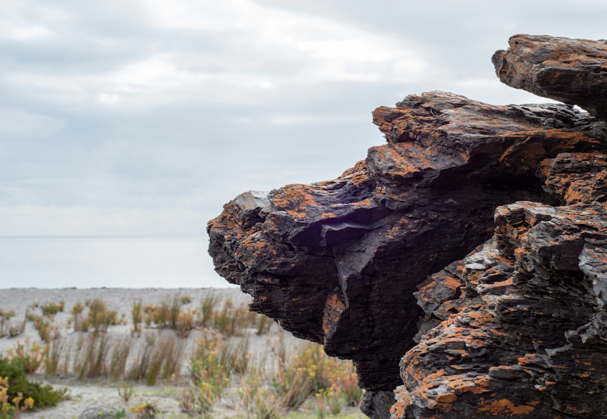

For an Adelaide earthworks enquiry, prepare three core facts before asking for review: the finished ground outcome, the measured route from street to work face, and the unknowns still needing checks. The published guide separates 6 work types: land shaping, excavation, site cuts, trenching, spoil removal and tight-access work. Useful inputs include dimensions, supplied levels, access limits, known services, material expectations, photos or plans, and preferred timing.
For homeowners and project organisers comparing earthmoving adelaide options, the practical starting point is a clear site outcome rather than a broad request for machinery.
Earthmoving Adelaide Explained
Simply Earthworks frames an earthmoving brief around the condition the site should be in when the machine leaves. That gives the enquiry a practical order: name the platform, fall, trench, cleared zone or material result before discussing plant.
For earthmoving adelaide work, write that finish plainly. A builder may need a prepared platform, a landscaper may need falls shaped for later work, and a service trade may need a trench along nominated lines and grades. Those are different scopes, even when each involves moving soil.
Keep observed facts separate from assumptions. Measured access, supplied levels, photos and plans belong in the first group. Soil, rock, groundwater, contamination, private services and approvals may still need locating, testing or professional advice.
Who This Applies To
This guide suits residential or small site enquiries where the next step is a site-specific review. It is relevant when the work involves shaping land, excavating to a defined area or depth, preparing a site cut, creating a drainage or service trench, removing spoil, or planning tight-access machine movement.
- Homeowners can organise dimensions, photos, access notes and the required finish before asking for review.
- Builders and landscapers can define the handoff condition, including levels, falls, formation or reinstatement expectations.
- Project organisers can list unknowns that affect written scope, price, availability or timing.
Submitting details does not confirm provider availability, timing or acceptance of work. Inspection, written terms and scope confirmation still matter.
Access Is More Than Gate Width
The published guide asks for the whole route from street to work face. Gates matter, but so do turns, eaves, gradients, surfaces, overhead limits, loading space and features that must remain intact. A machine passing one opening does not prove it can work, turn, load or transfer spoil at the required location.
In Adelaide, location is context rather than a ground report. CBD loading limits, inner-suburb gardens, coastal density, foothills slopes and northern growth areas can raise different planning questions. Those labels do not confirm soil, rock, groundwater, underground assets or approvals for a specific property.
Before requesting a review, note the suburb, approximate area or depth, nearby structures and constrained parts of the route. Photos can show surfaces, edges, fences, retaining, overhead obstructions and loading points. A related guide to earthmoving services in Adelaide follows the same decision space, but the useful evidence still comes from the individual site.
Choose The Scope By The Handoff
Broad wording can hide different responsibilities, so choose the work type by the result someone must accept next. Land shaping needs supplied levels, falls, cut-and-fill assumptions and the intended next use. Excavation needs the nominated area or depth, plus access and underground asset information.
Site cuts and levelling need supplied levels or formation requirements. Trenching and drainage need the route, line, grade and the following trade's handoff point. Spoil removal needs the expected material, loading point, cartage assumption, lawful receiving assumption and any stockpiling need. Tight-access work needs the complete operating route and spoil transfer path measured, not just the narrowest opening.
The selected scope does not decide the method by itself. It helps identify what a provider must inspect, price and confirm before work can be accepted.
What A Quote Should Make Clear
A useful quote should make assumptions visible across plant and access, ground and quantities, material handling, and completion. For plant and access, look for the equipment category, attachments, mobilisation and the full operating route. For ground and quantities, check supplied dimensions, observed conditions, and how rock or unsuitable material allowances are treated.
For material handling, clarify separation, stockpiling, loading, transport, receiving charges and imported material. For completion, ask what profile, testing, survey evidence, reinstatement or handoff acceptance is included. These questions help separate the physical job from items that still need confirmation.
Development approval should not be assumed from a short earthworks description. The published guide advises checking current PlanSA information and seeking qualified advice where levels, drainage, retaining, heritage or other regulated matters may be affected. Underground service checks also need site-specific controls because public plans may not show private services or exact depth.
Prepare The Enquiry Pack
Put the usable facts in one place before sending an enquiry. Include the suburb, job type, approximate area or depth, material expectations, measured access, photos or plans and preferred timing. Avoid sensitive documents unless a provider specifically asks for them through an appropriate process.
- Name the required finish, such as a platform, fall, trench, cleared zone or material outcome.
- Measure the street-to-work-face route, including gates, turns, eaves, gradients, surfaces and loading space.
- List known services and any asset information already gathered.
- Separate observed conditions from assumptions still needing checks.
- State what should happen to excavated material, including stockpiling, loading, transport or receiving assumptions.
- Ask what inspection, scope confirmation, price, availability and terms are needed before work can proceed.
- Name the finish. Write the required platform, fall, trench, cleared zone or material outcome in plain terms.
- Measure the route. Record access from street to work face, including gates, turns, surfaces, gradients, overhead limits and loading space.
- List unknowns. Separate known site evidence from issues that still need locating, testing, design input or approval advice.
- Clarify spoil. State whether material is to be separated, stockpiled, loaded, transported or assessed under a receiving assumption.
- Request review. Send the organised details so scope, price, availability and terms can be confirmed by the provider.
| Situation | Brief should include | Handoff question |
|---|---|---|
| Land shaping | Supplied levels, falls and intended next use | What finished condition must the next trade receive? |
| Excavation | Nominated area or depth, access notes and known asset information | What profile or depth is being removed to? |
| Trenching | Route, line, grade and following trade requirements | Who accepts the trench before the next stage? |
| Spoil removal | Material expectation, loading point and receiving assumption | Where is excavated material going? |
Common questions
What is the difference between earthmoving and excavation? The published guide defines earthmoving as broader ground shaping and preparation. Excavation is removal of material to a defined profile, area or depth, and one project may include both.
Can a small residential job be reviewed? Small jobs can be reviewed when the location, access, dimensions, material and required outcome are supplied. Suitability and minimum charges depend on the independent provider's written scope.
Does an Adelaide suburb name prove ground conditions? No. The published guide says an address is context, not a ground report, and does not prove soil, rock, groundwater, contamination, underground assets or approvals at a specific property.
Who checks underground services before work? The person controlling the work must arrange suitable asset information and site-specific controls. Public plans may not show private services or exact depth, so physical confirmation may also be needed.
This guide covers practical briefing decisions for Adelaide earthworks enquiries before site-specific scope, price, availability and terms are confirmed.